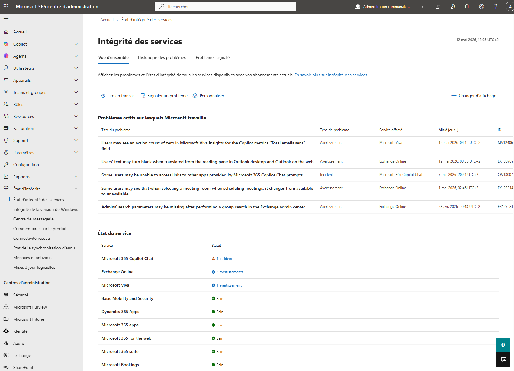

Tutorial – Microsoft 365 Security
This check verifies that Microsoft 365 core services are operational and healthy.
Microsoft 365 service issues can impact:
Open the Microsoft 365 Admin Center and navigate to:
Microsoft 365 Admin Center → Health → Service Health
https://admin.microsoft.com/Adminportal/Home#/servicehealth
Verify that core Microsoft 365 services are healthy:
Verify that no major incidents or service degradations are present.
